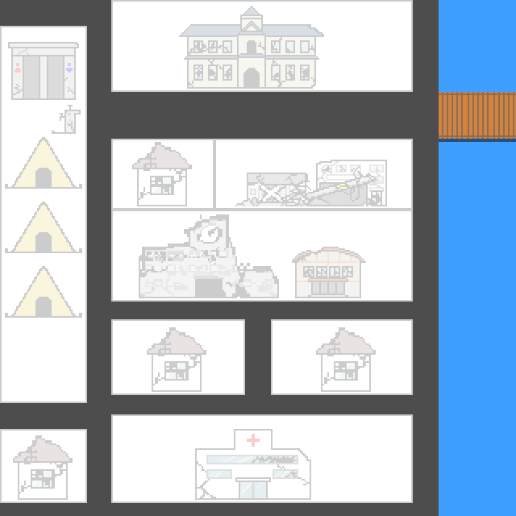

復興度
復興度
健康度
お金
アイテム
春
現在のイベント
カウント（開発側）
基本ルール
健康度が0%なる、または、春4週目がすぎるとゲームオーバー
アイテムを使う
ターン終了
実験(開発側)
村長（話す）
クエスト①：資材と人手
村人A（話す）
（
人手
× １ 入手）
村人B（話す）
（
資材
× １ 入手）
村長2（話す）
（
人手
と
資材
を使ってください）
納品数
a
クエストクリア！！
復興度が
５
上がった
表示を消す
ゲームオーバー